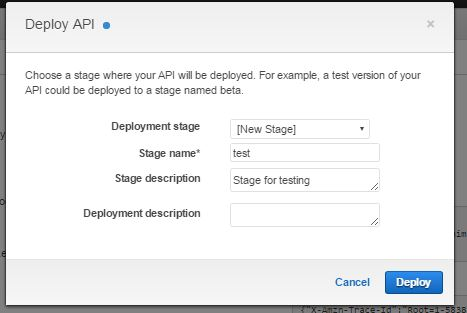

AWS - Creating my first lambda function
Since creating my AWS account a few days ago i have been dying to try out there lambda functions and thought I should create a very simple rest endpoint that will return a lorem lipsum message.
Creating the function
To get started I created a very basic index.js file in a new project with a function handler that will be called by aws.

To keep it simple I used the lorem-ipsum node module available here which i pulled down using a package.json file and npm

I then created a zip folder containing the index.js file and also its dependencies in the node_modules subfolder.
I did run into an issue when zipping these folders where it created a folder wrapping these files in the artifact and as such when uploading and testing in AWS I received errors saying the handler does not exist.
Mapping the lambda function
Now that I had created the artifact it was time to login to the AWS console and go to the lambda dashboard to create the lambda and map it to the function that I just created.
Below is the configurations I used when configuring the new lambda
Once done you should be able to test it out and if all works out well see the response :D

Creating the gateway
Now that I had a function running I wanted to be able to trigger it and get the response using a rest call. This was setup by using the AWS gateway.
First up I created an api and then created a get method to the lambda created above

Once the method is created I tested it out within the gateway and all looks good
The final step is to deploy the gateway API. At first I missed this step and was stuck wondering why I was receiving error's when trying to hit the same endpoint that was displayed when testing.

Once done I was able to successfully hit the endpoint using postman and see the generated Lipsum text.
While I used the AWS console to manually configure the different components since it was my first time. Next time I would use their aws-cli and cloudformation to try and do it all automatically enabling quicker changes and updates to the function.
The code can be found here